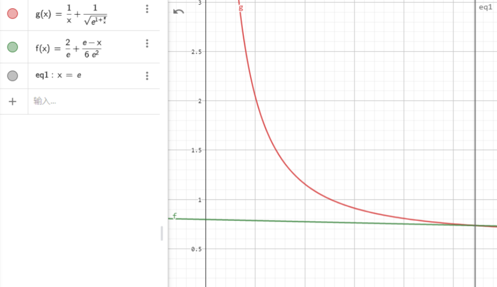
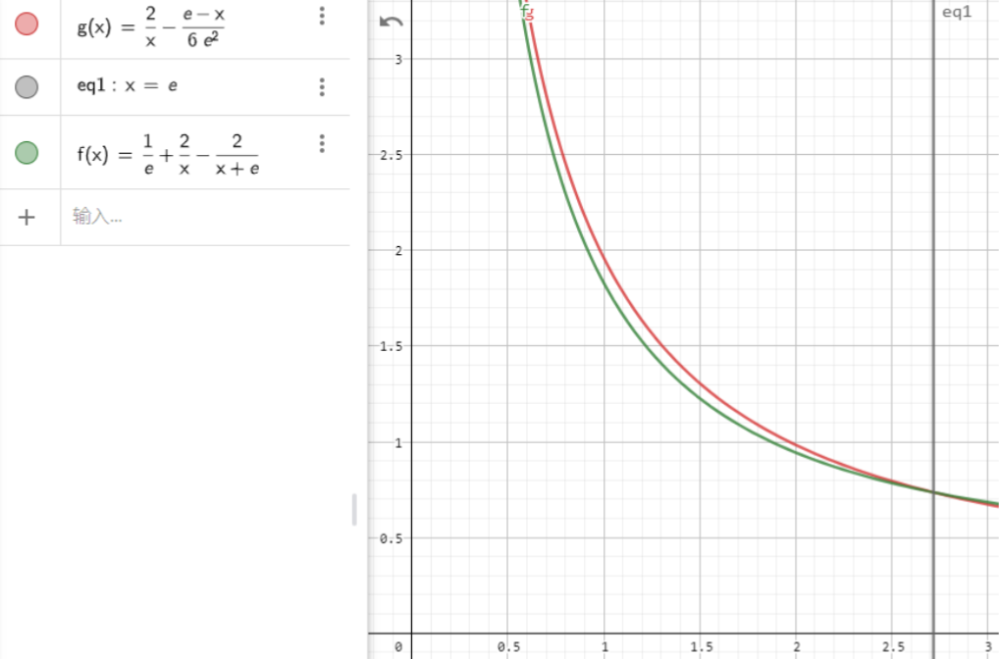

2022 年浙江数学高考压轴题的上下界加强的证明⚓︎
温馨提醒
本文写于 2022.8.27，修改于 2022.9.3，并同步投稿于我的 cnblogs 博客。
近期在整理时有细微调整，但保留原始 PDF 版本放在页面末尾。
已知函数 \(f(x)=\frac{e}{2x}+\ln x\ (x>0)\) 上有三点 \(A(x_1,f(x_1)),B(x_2,f(x_2)),C(x_3,f(x_3))\)，且 \(f(x)\) 在三个点的切线都经过点 \(P(a,b)\)，求解：
第 1 问. 求 \(f(x)\) 的单调区间。
第 2 问. 若 \(a>e\)，求证 \(0<b-f(a)<\frac 12(\frac ae-1)\)。
第 3 问. 若 \(0<a<e\) 且 \(x_1<x_2<x_3\)，则 \(\frac{2}{e}+\frac{e-a}{6e^2}<\frac{1}{x_1}+\frac{1}{x_3}<\frac{2}{a}-\frac{e-a}{6e^2}\)。
加强命题⚓︎
第 3 问 (加强). 若 \(0<a<e\) 且 \(x_1<x_2<x_3\)，则 \(\frac 1a+\frac{1}{\sqrt{e^{1+\frac{e}{a}}}}<\frac{1}{x_1}+\frac{1}{x_3}<\frac 1e+\frac 2a-\frac{2}{a+e}\)。
我也不知道来源和解答来自哪……
加强幅度⚓︎
这次这题出的很难，网上对这题的争议很大，而且我觉得这题并不适合出到高考……
浙江的导数真是一如既往的难，今年的不等式更是出乎意料地紧，实在是找不到计算量很小的、简洁而优美的解答了
这句话来自知乎网友 Kyble，别的我都赞同，但「出乎意料地紧」我真的不赞同，这明明可以紧得多：


而且上下界均有一些放缩到底的步骤，所以仍有很大的优化空间。
下界加强⚓︎
由 \(f'(x)=\frac{2x-e}{2x^2}\) 得 \(\frac{2x-e}{2x}(a-x)+\frac{e}{2x}+\ln x=b\)，即 \(\ln \frac{1}{x}-(a+e)\frac{1}{x}+\frac{ae}{2}(\frac{1}{x})^2+b=0\)。
令 \(z=\frac{1}{x}\) 得 \(\ln z-(a+e)z+\frac{ae}{2}z^2+b=0\)。
设 \(g(z)=\ln z-(a+e)z+\frac{ae}{2}z^2+b\)，则 \(g'(z)=\frac{(1-az)(1-ez)}{z}\)，因此 \(g(z)\) 在 \((0,\frac{1}{e})\) 和 \((\frac{1}{a},+\infty)\) 上递增，在 \((\frac 1e,\frac 1a)\) 上递减，故 \(b\in (\frac{a}{2e}+2,\frac{e}{2a}+\ln a+1)\)。由此可知 \(z_3<\frac{1}{e}<z_2<\frac{1}{a}<z_1\)。
那么原命题相当于要证明 \(z_3>\frac {1}{\sqrt{e^{1+\frac ea}}}\)，即 \(g(\frac{1}{\sqrt{e^{1+\frac{e}{a}}}})<0\)。
式子中都是 \(\frac{e}{a}\)，设其为 \(t=\frac ea>1\)，则
令 LHS 为 \(h(x)\)，注意到 \(h(1)=0\)，因此只需要求出 \(h(x)\) 在 \(x\in (1,+\infty)\) 的单调性：
对于蓝式，注意到 \(2e^{\frac{x}{2}-\frac 12}\ge 2(1+\frac{x}{2}-\frac{1}{2})=x+1\)，故 \(\le 0\)。
对于绿式，它随 \(x\) 单调递增，在 \(t=1\) 时 \(=0\)，故 \(\ge 0\)。
因此 \(h'(x)\le 0\)，所以 \(h(t)<h(1)=0\)。
上界加强⚓︎
这个其实没啥花样，就是朴素的极值点偏移套路。设 \(h(z)=h(z)-h(\frac 1e+\frac 2a-\frac {2}{a+e}-z)\)，其中 \(z\in (0,\frac 1e)\)。
注意到 \(\frac{1}{e}+\frac{2}{a}-\frac{2}{a+e}-z>\frac{2}{a}-\frac{2}{a+e}>\frac{1}{a}\)，因此只需证明 \(h(z)<0\) 即可。
注意到紫式 \(<2a(a+e)-a^2-ea-2e^2=a^2+ea-2e^2<ea-e^2<0\)，因此 \(h''(z)<0\)，\(h'(z)\ge h'(\frac 1e)>0\)。
因此 \(h(z)<h(\frac{1}{e})=-\frac{2a}{a+e}-\frac{2ea}{(a+e)^2}-\frac{a}{2e}+\frac{2e}{a+e}-\ln(\frac 2a-\frac{2}{a+e})=u(a)\)。
对 \(u(a)\) 求导，得 \(u'(a)=\frac{(e-a)^3(a+2e)}{2ea(a+e)^3}>0\)，故 \(u(a)<u(e)=0\)。
因此 \(h(z)<0\)。
优化空间⚓︎
- 红色处直接放到了头，应该能加强；
- 上界感觉还是不够紧，应该能搞出更强悍的系数。